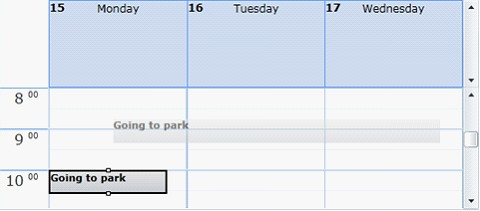
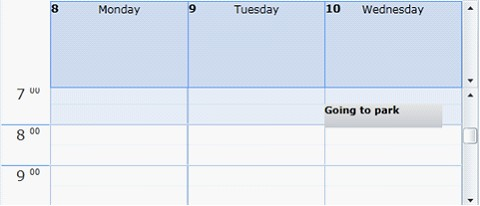
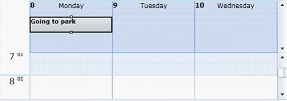
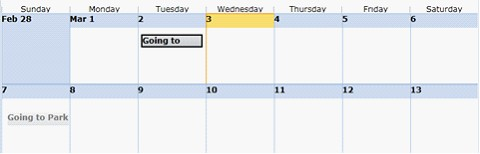
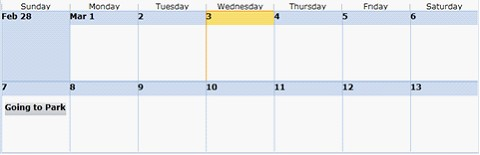
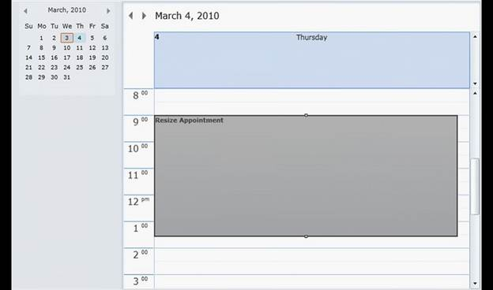

The appointments in Essential Schedule can be dragged and dropped to any time slot in all four types of views: day, week, workweek and month.
Enabling/Disabling Appointment Drag and Drop in Schedule Control
Users can enable appointment drag-and-drop by setting the AllowDragAndDrop property to true.
 Note:
Appointment drag-and-drop is enabled by default.
Note:
Appointment drag-and-drop is enabled by default.
Users can disable appointment drag-and-drop by setting the AllowDragAndDrop property to false.
Adding AllowDragAndDrop property
Add the AllowDragAndDrop property to a schedule control by using the following code.
|
[XAML]
<schedule:Schedule x:Name="schedule" AllowDragAndDrop="False"/> |
|
[C#]
Schedule schedule = new Schedule(); schedule.AllowDragAndDrop = true; |
Dragging and Dropping Appointments
An appointment can be dragged and dropped in all four types of schedule views within that view.

Figure 14: Appointment dragging

Figure 15: Appointment Dropped
Dragging All-Day Appointment
The appointments in time slots and day headers can be dragged to other locations.
The schedule control will change the appointment to a time-slot or all-day appointment according to where it is dragged.

Figure 16: Appointment Dropped on All Day
Month View Drag and Drop
The appointments in time slots and day headers can be dragged to other locations.
The schedule control will change the appointment to a time-slot or all-day appointment according to where it is dragged.

Figure 17: Appointment Dragging in Month View

Figure 18: Appointment Dropped in Month View
Appointment Drag-Drop Events
Essential Schedule has two set of events for dragging and dropping appointments.
· AppointmentDragging, AppointmentDragged
o AppointmentDragging—Occurs when the drag event begins, but the appointment is not moved.
o AppointmentDragged—Occurs when the appointment is dragged.
· AppointmentDropping, AppointmentDropped
o AppointmentDropping—Occurs when the appointment is about to be dropped on a location.
o AppointmentDropped—Occurs when the appointment is dropped on a location.
Adding Events
Add events to appointments by using the following code.
|
[XAML]
<schedule:Schedule x:Name="schedule" AppointmentDragged="schedule_AppointmentDragged" AppointmentDragging="schedule_AppointmentDragging" AppointmentDropped="schedule_AppointmentDropped" AppointmentDropping="schedule_AppointmentDropping" AllowDragAndDrop="True" ScheduleType="Week" /> |
|
[C#]
private void schedule_AppointmentDragged(object sender, ScheduleAppointmentEventArgs args) { MessageBox.Show("AppointmentDragged"); }
private void schedule_AppointmentDragging(object sender, ScheduleAppointmentEventArgs args) { MessageBox.Show("AppointmentDragging"); }
private void schedule_AppointmentDropped(object sender, ScheduleAppointmentEventArgs args) { MessageBox.Show("AppointmentDropped"); }
private void schedule_AppointmentDropping(object sender, ScheduleAppointmentEventArgs args) { MessageBox.Show("AppointmentDropping"); } |
Resizing Appointments
The ability to resize appointments in Essential Schedule WPF enables you to extend the time slot of an appointment by dragging its top or bottom sizing handle. The start time and end time of an appointment will change respective to this resizing.
Basic Properties
Essential Schedule WPF exposes the following top-level properties:
· To enable all appointments to be resized, set the AllowResize property in the Schedule class to true.
· To enable resizing for a particular appointment, set the AllowResize property in the ScheduleAppointment class to true.

Figure 19: Resize Appointment